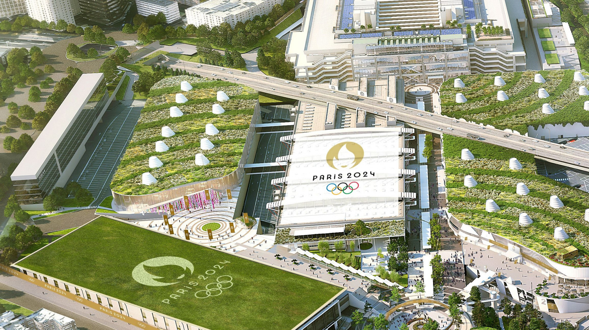
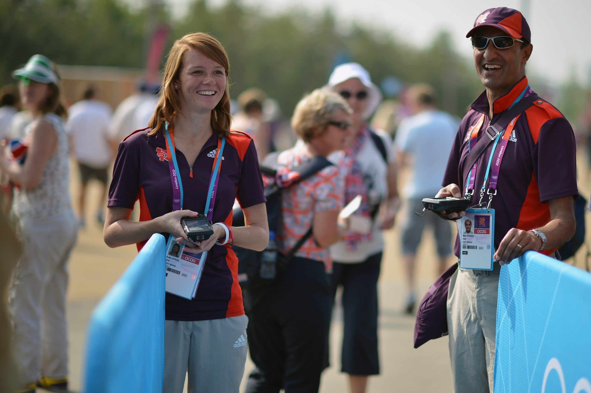
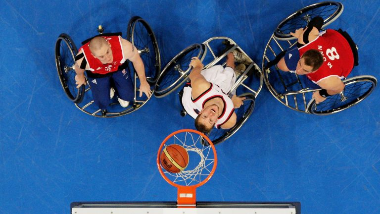

Les JO 2024 en 7 articles
Credits: Volocopter - SIPA PRESS / SIPA
Transports en Commun et Jeux Olympiques : Le Pilier Incontournable d'un Paris 2024 Réussi

Credits: Arena Paris Sud - PARIS 2024
Les Jeux Olympiques de Paris 2024 : Un Engagement Fort en Faveur de l'Environnement
Credits: Chantier Solideo - DRONE PRESS / SENNSE
Paris 2024 : Une Ambitieuse Transformation Économique et Urbaine

Credits: PARIS 2024 - FLORIAN HULLEU
Paris 2024 : Rayonner à l'International, Les Jeux Olympiques au Cœur d'une Vision Planétaire

Credits: Benevoles JO - GETTY IMAGES/JEFF MITCHEL
Jeunesse et Bénévolat aux Jeux Olympiques 2024

Credits: Siege Aubervilliers - HJBC / Shutterstock
Assister aux JO 2024 : se sentir plus heureux? Santé et JO
